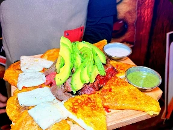

LLANERO
100%
VENEZOLANAS

RAÍCES100%
VENEZOLANAS
RAÍCES QUE SE SABOREANDE RAÍZ LLANERA.
DE RAÍZ LLANERA.
DE PURO SABOR.
En El Sabor del Llanero celebramos la cocina venezolana con cachapas, queso de mano, carne en vara y acompañamientos que invitan a compartir. Una mesa para reunirse, probar algo distinto y volver por ese sabor de casa.
01 / TRADICIÓNRecetas con identidad02 / ENCUENTROUna mesa para compartir
Conoce nuestra comunidad ↗